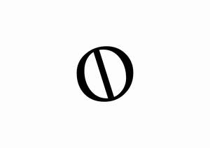

Trade Mark Journal No.2025/009 28 February 2025
UK00004159584 12 February 2025 (9,18,25)

- Class 9
- Eyewear; Prescription eyewear; Protective eyewear; Sports eyewear; Corrective eyewear; Eyewear pouches; Eyewear cases; Cases for eyewear; Eyeglasses; Fashion eyeglasses; Sunglass lenses; Lenses for eyeglasses; Sunglasses; Cases for eyeglasses and sunglasses; Fashion sunglasses; Lenses for sunglasses; Protective eyeglasses; Optical lenses for eyeglasses; Optical lenses for use with sunglasses; Optical lenses for sunglasses; Frames for spectacles and sunglasses; Prescription eyeglasses; Nose pads for eyewear; Eyeglass lenses; Prescription sunglasses; Glasses, sunglasses and contact lenses; Eyeglasses for sports; Frames for eyeglasses; Frames for sunglasses; Sunglasses frames; Cases for spectacles and sunglasses; Smart phones in the form of eyewear; Lenses for glasses; Sunglass temples; Magnifying eyeglasses; Optical lenses for spectacles; Spectacles [glasses]; Magnetic clip-on sunglass lenses; Clip-on sunglasses; Chains for spectacles and for sunglasses; Chains for spectacles and sunglasses; Eyeglass frames; Lenses for spectacles; Optical glasses; Prescription glasses; Protective glasses; Frames for eye glasses; Replacement lenses for glasses; Anti-glare glasses; Glasses; Sports training eyeglasses; Sunglass cases; Cases for eyeglasses; Fashion spectacles; Straps for sunglasses; Glacier eyeglasses; Ophthalmic lenses; Ski glasses; Glass ophthalmic lenses; Shooting glasses [optical]; Sports glasses; Glasses for sports; Glasses frames; Frames for glasses; Cases for sunglasses; Eye glasses; Chains for eyeglasses; Prescription spectacles; Goggles; Anti-glare spectacles; Sunglass nose pads; Spectacles [optics]; Sunglasses for pets; Eyeglass temples; Protective goggles; Covers for sunglasses; Anti-dazzle spectacles; Sunglass cords; Frames for spectacles; Magnifying glasses [optics]; Optical lenses; Lenses (Optical -); Anti-fogging safety goggles; Eyeglass shields; Antiglare glasses (anti-glare); Protective spectacles; Antireflection coated eyeglasses; Spectacle glasses; Cords for eyeglasses; Goggles for use in sports; Goggles for sports; Sports goggles; Sports (Goggles for -); Chains for sunglasses; Corrective glasses; Sight glasses [optical]; 3D eye glasses; Opera glasses; Anti-reflective lenses; Prescription goggles for swimming; Eyeglass lanyards; Cords for sunglasses; Silicone nose pads for eyeglasses; Theatre glasses; Plastic lenses; Dustproof glasses; Motorcycle goggles; Ski goggles; Spectacles; Eyeglass cases; Cases (Eyeglass -); Smart glasses; Sun glasses; Anti-glare visors; Smartglasses; Children's eye glasses; Cases for children's eyeglasses; Magnifying glasses.
- Class 18
- Bags for sports clothing; Bags; Tote bags; Luggage bags; Duffle bags; Duffel bags; Carry-on bags; Toiletry bags; Bags for clothes; Drawstring bags; Carry-all bags; Belt bags and hip bags; Nose bags [feed bags]; Bags (Nose -) [feed bags]; Carrying bags; Grocery tote bags; Cross-body bags; Bags for umbrellas; Diaper bags; Luggage, bags, wallets and other carriers; Crossbody bags; Cloth bags; Bucket bags; Leather bags; Sling bags; Nappy bags; Canvas bags; Shoe bags; Duffel bags for travel; Belt bags; Clutch bags; Wheeled bags; Kit bags; Travel bags; Bags for travel; Souvenir bags; Messenger bags; Garment bags; Leather bags and wallets; Toilet bags; Make-up bags; Shoulder bags; Waterproof bags; Cosmetic bags; Reusable shopping bags; Makeup bags; Umbrella bags; Camping bags; Towelling bags; Courier bags; Bags for campers; Roll bags; Bags for carrying pets; Gym bags; Knitted bags; Bags [envelopes, pouches] of leather, for packaging; Bags [envelopes, pouches] for packaging of leather; Bags [envelopes, pouches] of leather for packaging; Hand bags; Attaché bags; Travelling bags; Cabin bags; Flight bags; Traveling bags; Overnight bags; Beach bags; Bags for climbers; Mesh shopping bags; Mesh bags for shopping; Boot bags; Leather shopping bags; Canvas shopping bags; Knitting bags; Bum bags; Hiking bags; Frames for bags [structural parts of bags]; Wash bags for carrying toiletries; Roller bags; Suit bags; Nose bags; Hunting bags; Baby carrying bags; Gladstone bags; Feed bags; Waist bags.
- Class 25
- Clothing; Knitwear [clothing]; Jackets [clothing]; Ready-to-wear clothing; Woolen clothing; Furs [clothing]; Garments for protecting clothing; Layettes [clothing]; Clothing layettes; Linen clothing; Headbands [clothing]; Headbands for clothing; Gloves [clothing]; Gloves as clothing; Clothes; Aprons [clothing]; Maternity clothing; Kerchiefs [clothing]; Jerseys [clothing]; Denims [clothing]; Shorts [clothing]; Cashmere clothing; Capes (clothing); Oilskins [clothing]; Gabardines [clothing]; Silk clothing; Leather (Clothing of -); Leather clothing; Clothing of leather; Collars [clothing]; Parts of clothing, footwear and headgear; Knitted clothing; Veils [clothing]; Hoods [clothing]; Windproof clothing; Corsets [clothing, foundation garments]; Embroidered clothing; Wristbands [clothing]; Belts [clothing]; Belts for clothing; Bandeaux [clothing]; Rainproof clothing; Waterproof clothing; Casual clothing; Visors [clothing]; Jackets being sports clothing; Jackets (Stuff -) [clothing]; Stuff jackets [clothing]; Bottoms [clothing]; Playsuits [clothing]; Clothing for leisure wear; Ready-made clothing; Latex clothing; Trunks being clothing; Woven clothing; Infant clothing; Drawers [clothing]; Drawers as clothing; Leisure clothing; Ties [clothing]; Clothing for children; Clothing for sports; Sports clothing; Athletic clothing; Muffs [clothing]; Bodies [clothing]; Clothing for babies; Tops [clothing]; Clothing for infants; Clothing for cycling; Weatherproof clothing; Pockets for clothing; Fabric belts [clothing]; Water-resistant clothing; Triathlon clothing; Handwarmers [clothing]; Clothing for skiing; Beach clothing; Thermal clothing; Chaps (clothing); Cowls [clothing]; Men's clothing; Fishing clothing; Mitts [clothing]; Braces for clothing; Dance clothing.
KYOMI PRODUCTIONS LTD